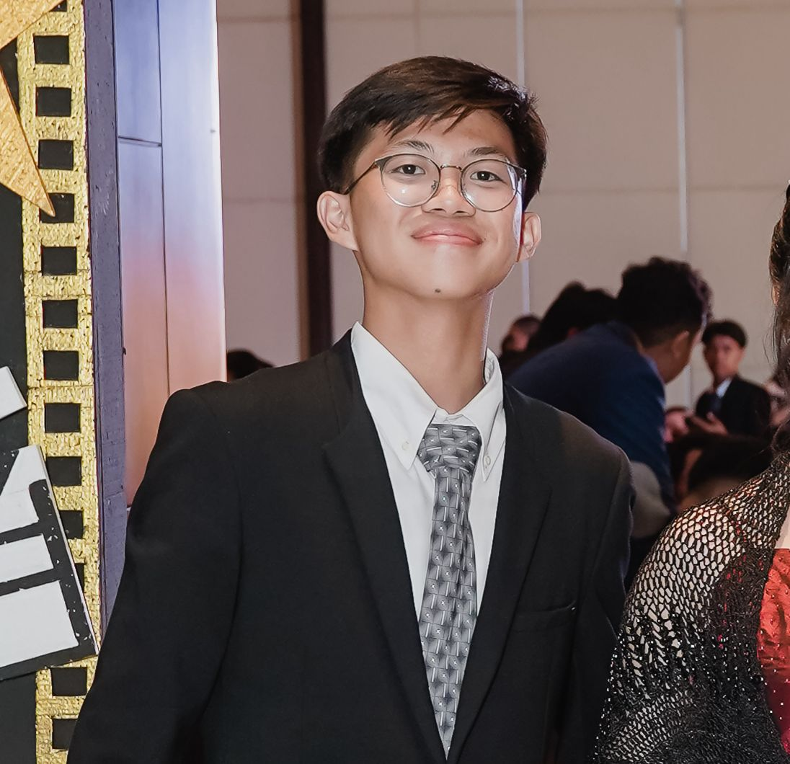

Available for Projects
Blending design, data, and
hhuman-centered thinking.
Hi! I’m Fidelio Bagas, an Information Systems student focused on building digital products through UI/UX design, data visualization, and system thinking.
With a background in Information Systems, I combine technical understanding, data-driven insights, and empathy for users to create digital experiences that work well in real-world contexts and deliver real impact for both users and the systems behind them.
Location
Depok, Indonesia
Experience
3+ Years
Specialization
UI/UX & Data Viz